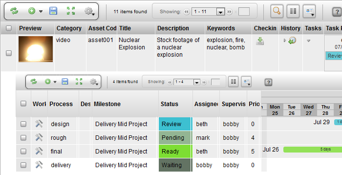
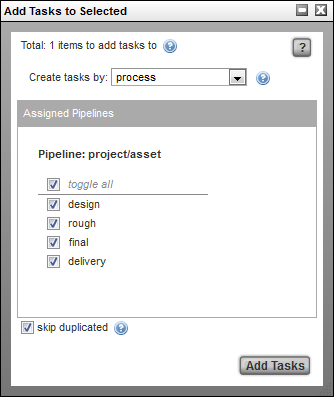
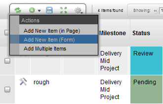
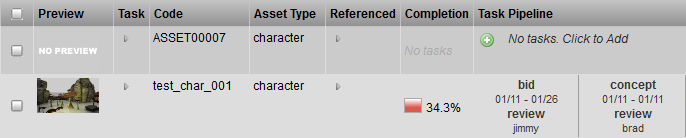

Insert/Edit Tasks
There is more than one way to create new tasks. The following describes explains each way.
Task Menu
Select the item to add tasks to. Then, go to the Gear menu for the view and select Tasks → Add Tasks To Selected.

Check mark the processes to add the task to and then hit Add Tasks.

The skip duplicated option skips adding a task that has already been created for that process e.g. if only a task for design has already been created.
Notice the new tasks added to the Task Pipeline column:

Another way to create a task is to create a task by context. This is provided in the drop down selection menu.

Create task by: Process | Displays all the processes to select from, to create a task for. |
Create task by: Context | Displays all the contexts to select from, to create a task for. |
Create task by: All Contexts in Process | Creates all the contexts defined in the pipeline, but only displays the processes to select from, to create a task for. |
Task Edit Column
The Task edit column can be used to insert tasks one at a time for a particular item.

Task Status Column
Once an item is created which has a pipeline, the widget will show a green insert button (+). This will load the task creation GUI to create tasks for the item.

Task Properties

Each Task can have the following attributes.
Process | The currently selected process. Use the menu to select a different process to perform on the current parent asset. |
Description | A description to identify the task. |
Milestone | Assignment to a milestone item that represents a specific milestone in the project. |
Status | The status of the currently selected task pipeline. |
Assigned | The user assigned to complete the task. |
Supervisor | The user assigned to supervise the task. |
Priority | The priority level of the task. |
Bid start date | Proposed date to start the assigned task. Drag the date in the calendar to set. |
Bid end date | Proposed date to complete the assigned task. Drag the date in the calendar to set |
Bid Duration | Proposed amount of hours to complete the assigned task. |